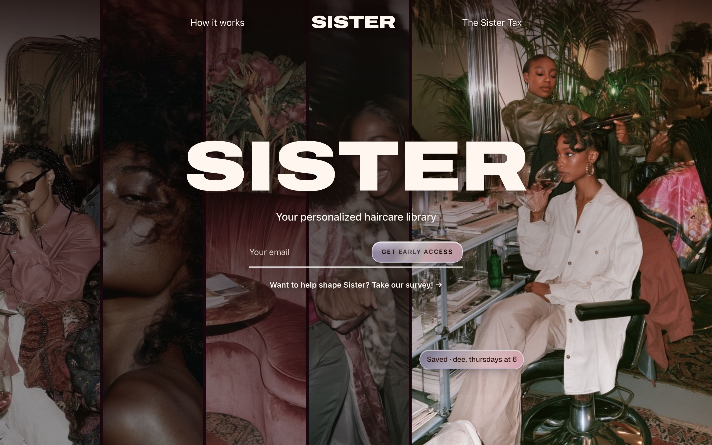
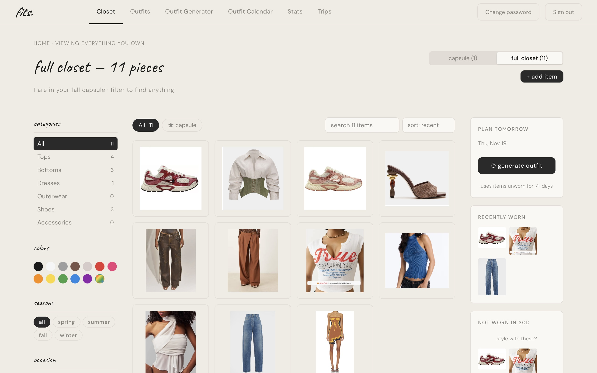

Sister
Product strategy, research, design and development
A personal hair library for Black women to save stylists, salons, products and advice worth finding again. I work directly with Sister’s founder.
I build useful apps, bring women together and spend most mornings in a cafe.
I spent four years as a software engineer at Amazon One Medical, building billing products that helped patients understand their balances and operations teams manage the work behind them.

Product strategy, research, design and development
A personal hair library for Black women to save stylists, salons, products and advice worth finding again. I work directly with Sister’s founder.
Solo build: product, design and development
One place to run a job search. It finds roles on company job boards, shows why they fit, tracks your pipeline and tailors your resume without inventing experience.


Solo build: product, design and development
A closet app for people who own plenty but wear the same five things. Build outfits from what you own, plan a trip day by day and pack from the finished plan.
Software Engineer II · Billing Platform
2022 to 2026
I worked on One Medical’s billing platform, from the balance information patients see to the tools operations teams use behind the scenes. I wrote specs, worked directly with the teams closest to the problems and managed phased rollouts.
Defined when the patient-facing AI assistant should surface existing payment links and set its pre-launch reliability criteria with TPMs and applied scientists.
Built operational dashboards that helped the team decide what to improve next.
Led operations, revenue and engineering stakeholders through a workshop that set priorities for four initiatives.
Owned the patient balance display from build through launch as the sole engineer, using phased rollouts and defined go/no-go checks.
Built an OCR document-capture flow that replaced manual data entry for front desk teams.
TechnologiesReact, TypeScript, GraphQL, Ruby on Rails
Robotic Process Automation Engineer
2021 to 2022
Scoped and built automations with internal operations teams, then trained them to use and maintain the new tools.
I studied nutrition science and Spanish at UNC Greensboro, then full-stack web development at Flatiron School. That mix still shapes how I approach product work: understand the context, translate between people and make the next step clear.
From 2022 to 2025, I facilitated a DevColor squad of six engineers and organized conversations on career growth, financial literacy and professional development.
I’m launching the NYC chapter of a community that brings women offline and into the same room. I shape each event from concept to partner and venue, including small classes at Black-owned studios and supper clubs.